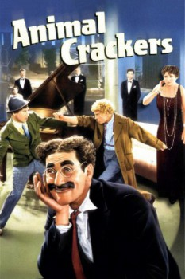

Country:United States, 98 minutes
Spoken languages:English
Genres:Comedy, Music
Director(s):Victor Heerman
Writer(s):Morrie Ryskind, George S. Kaufman
Video Codec:Unknown
Number: 6370

Certification:G
Storyline:
The well-known explorer and hunter Captain Spaulding has just returned from Africa, and is being welcomed home with a lavish party at the estate of influential society matron Mrs. Rittenhouse when a valuable painting goes missing. The intrepid Captain Spaulding attempts to solve the crime with the help of his silly secretary Horatio Jamison, while sparring with the anarchic Signor Emanuel Ravelli and his nutty sidekick The Professor.
Cast:
Groucho Marx (as Captain Jeffrey T. Spaulding), Harpo Marx (as The Professor), Chico Marx (as Signor Emanuel Ravelli), Zeppo Marx (as Horatio Jamison), Lillian Roth (as Arabella Rittenhouse)
Medium: Media file,
Location: D:\Marx Brothers\1930 Marx Brothers Animal Crackers.mp4
Loaned: No
Aspect ratio: Unknown